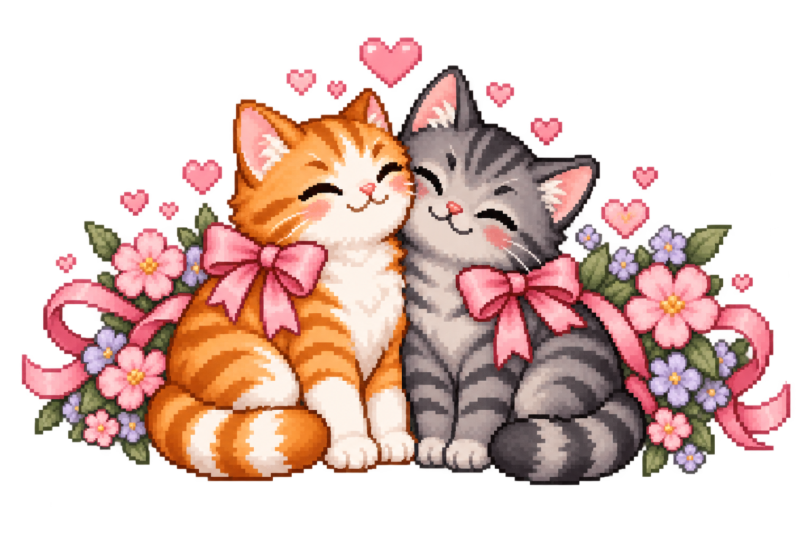

continue
record
without record
continuing starts recording
are you sure?
yes
go back
● recording
stop
♫ Music on

some things deserve to be
felt.
♡
nothing’s gonna
hurt you,
baby.
end
save recording
delete recording
save this memory